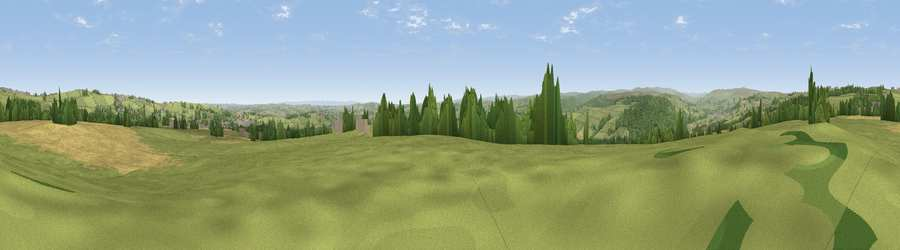

Viewpoint near Fir Tree
#9293 in England · top 15% of its area beats it · near Fir TreeThe view, rendered

A 360° render of this exact spot computed from the terrain model, tree cover and land cover — summer colours, afternoon light, calibrated against photographs of famous viewpoints. Real trees, hedges and buildings will differ in detail.
The panorama
Grey silhouette: terrain skyline in each direction (720 bearings, Earth curvature and refraction included). Dashed green: skyline with trees (+15 m) and buildings (+8 m) as obstacles. Blue strip: how far the ground is visible on each bearing.
Where the view opens
Wedge length = distance to the farthest visible ground on that bearing (vegetation-aware). Rings at 10, 25 and 50 km.
What fills the view
66% grassland · 17% cropland · 15% woodland · 2% built-up
Angular shares of the visible panorama (visual magnitude), not map area. Landscape diversity 0.41 (0–1 Shannon).
Key numbers
More beautiful places nearby
The staircase of upgrades: each row has a higher view potential than everything closer. Driving times are estimates from straight-line distance, calibrated against real road routing — check an actual route before setting out.
| Place | Direction | Drive | Score |
|---|---|---|---|
| Billy Hill | NNE · 3 km | ~8 min | 66.4 |
| Viewpoint near Billy Row | ENE · 3 km | ~8 min | 70.3 |
| Collier Law | WNW · 14 km | ~25 min | 71.7 |
| Viewpoint near Edmondsley | NE · 15 km | ~27 min | 72.6 |
| Viewpoint near Eggleston | SW · 17 km | ~29 min | 76.0 |
| Pontop Pike | N · 17 km | ~30 min | 77.8 |
| Little Dun Fell | W · 43 km | ~63 min | 78.4 |
| Cross Fell | W · 45 km | ~66 min | 78.7 |
54.71432, -1.78537 · source: screening · position refined by local search. Computed location — check access rights before visiting.